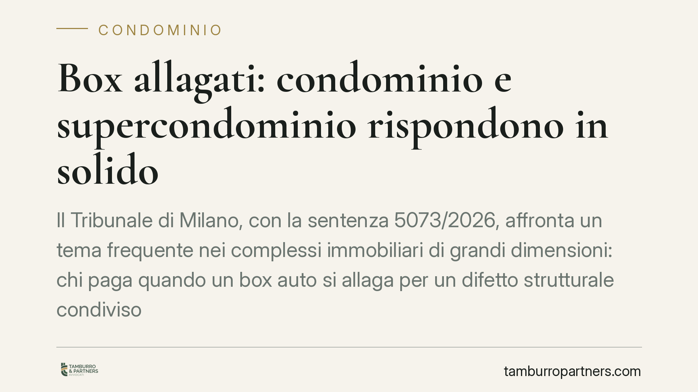

Box allagati: condominio e supercondominio rispondono in solido
Il Tribunale di Milano, con la sentenza 5073/2026, affronta un tema frequente nei complessi immobiliari di grandi dimensioni: chi paga quando un box auto si allaga per un difetto strutturale condiviso. La risposta è netta: se la cosa difettosa è controllata sia dal condominio sia dal supercondominio, entrambi rispondono in solido per l'intero danno. Vediamo perché e con quali conseguenze pratiche.

Il caso
Alcuni proprietari di box auto subiscono allagamenti ricorrenti nei locali interrati. La causa non è un evento occasionale, ma un difetto della struttura comune: impianti di smaltimento delle acque e opere interrate che interessano sia il singolo condominio sia il supercondominio di cui fa parte.
La domanda posta al giudice è semplice: a chi imputare il danno? Al condominio che gestisce l'edificio, al supercondominio che controlla le parti e gli impianti comuni ai diversi fabbricati, o a entrambi?
Il Tribunale di Milano, Sez. X Civile, sceglie la soluzione più rigorosa: la responsabilità grava su entrambi gli enti, in solido.
Inquadramento normativo
Il fondamento è l'art. 2051 c.c., che disciplina il danno da cose in custodia. La norma addossa la responsabilità a chi ha la "custodia" del bene, cioè il potere effettivo di controllarlo, gestirlo e intervenire su di esso. Si tratta di una responsabilità oggettiva: il custode risponde a prescindere dalla colpa, salvo che provi il caso fortuito (un evento esterno, imprevedibile e inevitabile).
Il punto centrale della decisione è questo: la responsabilità ex art. 2051 c.c. non segue la mera proprietà del bene, ma il potere reale di controllo. Chi ha la disponibilità giuridica e materiale della cosa, e quindi la possibilità di eliminarne i pericoli, ne è il custode.
Quando più soggetti esercitano questo potere sulla medesima fonte di danno, interviene l'art. 2055 c.c. sulla solidarietà passiva: se il fatto dannoso è imputabile a più soggetti, tutti sono obbligati in solido. Significa che il danneggiato può chiedere l'intero risarcimento a uno qualsiasi dei responsabili, salvo poi il diritto di quest'ultimo a rivalersi sugli altri per la loro quota.
Perché condominio e supercondominio rispondono insieme
Nei complessi immobiliari articolati, condominio e supercondominio esercitano poteri di gestione sovrapposti su impianti e strutture comuni. Il condominio gestisce l'edificio; il supercondominio gestisce i beni e i servizi che collegano più fabbricati.
Se la causa dell'allagamento risiede in una struttura controllata da entrambi, nessuno dei due può liberarsi scaricando la responsabilità sull'altro. Entrambi avevano il potere di intervenire e prevenire il danno; entrambi, quindi, ne rispondono.
Implicazioni pratiche
Per i proprietari danneggiati la pronuncia è favorevole: possono agire indifferentemente contro il condominio o il supercondominio per ottenere l'intero risarcimento, senza dover individuare in anticipo la ripartizione interna delle responsabilità.
Per gli amministratori – sia del condominio sia del supercondominio – il messaggio è di segno opposto. Non basta sostenere che l'impianto difettoso "appartiene all'altro ente". Ciò che conta è il potere di controllo concreto. Trascurare la manutenzione di strutture comuni espone l'ente amministrato a una condanna per l'intero danno, con successivo contenzioso interno per il regresso.
Particolare attenzione va riservata ai verbali assembleari: segnalazioni di infiltrazioni rimaste senza intervento rafforzano la posizione del danneggiato e indeboliscono la prova del caso fortuito.
Cosa fare in concreto
- Mappare i poteri di gestione: individuare con precisione quali strutture e impianti ricadono sotto il controllo del condominio e quali del supercondominio, verificando regolamenti e tabelle.
- Documentare la manutenzione: conservare contratti, interventi e segnalazioni. In giudizio, la prova degli interventi tempestivi è spesso l'unico argine efficace.
- Agire sulle segnalazioni: se arrivano denunce di infiltrazioni o allagamenti, deliberare e intervenire senza ritardi, mettendo a verbale ogni passaggio.
- Verificare le coperture assicurative: controllare che le polizze del condominio e del supercondominio coprano i danni da cose in custodia e valutarne l'adeguatezza dei massimali.
- Impostare per tempo il regresso: in caso di condanna solidale, l'ente che paga può rivalersi sull'altro. Consigliamo di raccogliere fin da subito la documentazione utile a quantificare le rispettive quote di responsabilità.
Un orientamento da monitorare
La decisione del Tribunale di Milano si inserisce in una linea che privilegia la tutela del danneggiato e valorizza il potere di controllo rispetto alla titolarità formale del bene. Pur trattandosi di una pronuncia di merito, offre indicazioni concrete su come i giudici tendono a distribuire la responsabilità nei complessi immobiliari multipli.
---
*Contributo informativo a cura di Tamburro & Partners - Avv. Giuseppe Tamburro. Non costituisce parere legale.*
Ogni condominio ha una storia a sé.
Se gestisci un'amministrazione e vuoi un confronto su una specifica questione condominiale, scrivi allo studio. Ti rispondiamo entro un giorno lavorativo.